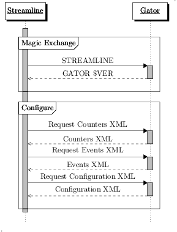
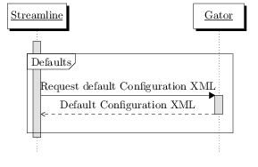
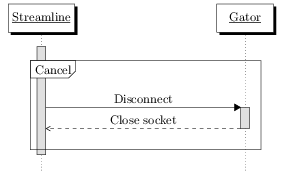
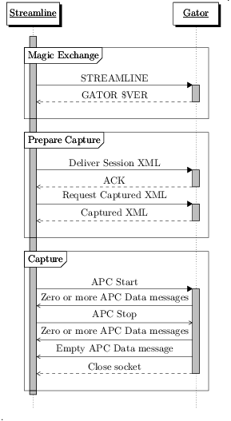
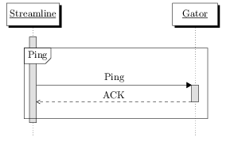

Gator v14 (DS-5 v5.15) Protocol
Index
Introduction
This document describes the TCP/IP protocol used by gator or other implementing clients to communicate with Streamline version 5.15 or later. Use this information to build a customized client to communicate profiling data to Streamline. The gator source code, distributed as part of DS-5, is the reference implementation of this protocol. The protocol may change with future releases of Streamline, but Streamline will maintain backwards compatibility with this version of the protocol so that clients need only implement one version of the protocol. Streamline requires that your client is able to parse and generate simple XML and ignore additional or unexpected nodes or attributes. Because the XML features described in this protocol documentation are the only ones used, Streamline does not require the more complex features of XML.
Changes in v14 (DS-5 v5.15)
gator v14, the version of gator shipped with Streamline version 5.15, has a few important updates that you should familiarize yourself with before implementing or updating your own customized Streamline TCP/IP protocol.
- Added the backtrace_processing attribute to Captured XML to allow call stack post-processing to be disabled
- Improved the Magic Exchange so that Streamline sends its version
- Added series_composition, rendering_type, average_cores, percentage, and derived to Events XML
- Remove unneeded attributes from Configuration XML and Captured XML and read them from Events XML. This means that events.xml is now required for Local Capture.
- Change packing strategy from using LEB128 to SLEB128
- Replace uname in the Summary Message with arbitrary key/value pairs
Changes in v13 (DS-5 v5.14)
The following changes have been made in v13 (DS-5 v5.14)
- Streamline no longer requests Session XML
- Added ways to reduce duplication in Events XML with counter_set and option_set nodes
- Added modifier attribute for Events, Configuration and Captured XML to support fixed-point math
- Configuration XML version updated to 2
- Added live_rate attribute on in Session XML for Live support
- Documented new energy_capture node in Session XML released in DS-5 v5.13
- Added cpuid attribute in Captured XML
- Added the Newline Canary to the Summary Frame Message to detect APC corruption
- Added the system uname to the Summary Frame Message
- Added cpuid to the Core Name Message
- Documented that Block Counters must always start with a time
- Added the live_energy_delta attribute to the Captured XML file
Target-Host Protocol
Magic Exchange
A handshake is required so that your target and client can recognize each other. It consists of ASCII newline (\n) delimited strings. If the client receives a string it does not recognize, the string must be discarded and another string is read.
The standard Streamline client is gator. But, as you can customize gator and call it what you wish, the term client is used generically to refer to your customized protocol.
- The client receives Streamlines highest supported protocol version VERSION $VER\n, for example if Streamline supports up to version 23, the client would recieve VERSION 23\n.
- The client receives STREAMLINE\n
- Send GATOR 14\n
Further communication from Streamline comes as Commands
Command Header
Streamline issues commands that consist of a header and a body. Streamline expects a Response to these commands from the client.
| Name | Type | Description | ||||||||||||
|---|---|---|---|---|---|---|---|---|---|---|---|---|---|---|
| Code | int8 | The type of command
|
||||||||||||
| Length | Little Endian int32 | Number of bytes in the body |
If the client receives an unrecognized command, it should respond with a NAK.
Request XML Body
Command code 0 is a request from Streamline for XML. The root node is request and it has the type attribute that tells the client which xml is required. For example, this is a request for Events XML
<?xml version="1.0" encoding="US-ASCII"?>
<request type="events">
</request>
| Request | Response Code | Response Body |
|---|---|---|
| <request type="events"> | XML | Events XML |
| <request type="configuration"> | XML | Configuration XML |
| <request type="counters"> | XML | Counters XML |
| <request type="captured"> | XML | Captured XML Streamline requests Captured XML prior to starting a capture. |
| <request type="defaults"> | XML | default Configuration XML |
Deliver XML Body
The Deliver XML command sends XML to the client:
| Request | Response Code |
|---|---|
| Session XML | ACK |
| Configuration XML | ACK |
APC Start Body
The APC Start command does not have a body. This command initiates a capture and readies Streamline to receive APC Data Responses. No ACK is expected and no further XML exchange takes place. If a failure occurs, the client should send an Error.
APC Stop Body
The APC Stop command also does not have a body. This command triggers the end of the APC and no ACK is expected. APC Data Responses can continue to arrive until all captured data is sent, then the connection should be closed. If a failure occurs, the client should send an Error.
Disconnect Body
The Disconnect command, which closes the connection to the target, does not contain a command body. No ACK is expected.
Ping Body
The Ping command does not have a body. Send an ACK response to this command.
Response Format
Responses consist of a header followed by a body
Response Header
The format for the response header is identical to that of the Command Header but the Codes are different
| Name | Type | Description | ||||||||||
|---|---|---|---|---|---|---|---|---|---|---|---|---|
| Code | int8 | The type of command
|
||||||||||
| Length | Little Endian int32 | Number of bytes in the body |
XML Body
The body should contain XML, the format of which is dependent on the Request type. For a list of types, see Request XML Body
APC Data Body
The APC body should contain an APC Frame. If the length is zero, it is the End of Sequence message which indicates that all APC Frames have been transmitted to Streamline.
ACK Body
This response, which indicates the Command was successful, does not have a response body.
NAK Body
Indicates a synchronous non-fatal error occurred when handling a request. It can contain a UTF-8 error message. The length is specified in the header, so no NULL character is expected. Indicates that the Command failed, but that the connection can continue.
Error Body
Indicates a synchronous fatal error occurred when responding to a request. A UTF-8 error message. The length is specified in the header, so no NULL character is expected. Use this response when the error is terminal and the connection must be closed. Errors may be sent without a request, but Streamline may not process them immediately.
XML
Events
The Events XML defines the list of counters that you can choose from in the Counter Configuration dialog box. Modify this list to create your own custom counters.
events
The events root node of Events XML can have any number of counter_set and category child nodes.
counter_set
The counter_set node has no children and the following attributes. Counter sets are used when the number of counters that can be enabled in a category is restricted. Streamline will respect the restriction and assign a name from the set to a counter in Configuration XML.
| Name | Type | Description |
|---|---|---|
| name | String | Name of the counter_set |
| count | String | Number of counters in the set. Counter names are derived by appending a number, starting at zero, to the set name. Ex, if the set name is ARM_Cortex-A8_cnt and the count is 4, then the counter names in the set are ARM_Cortex-A8_cnt0, ARM_Cortex-A8_cnt1, ARM_Cortex-A8_cnt2 and ARM_Cortex-A8_cnt3 |
| title | String | Appended to the title of the event when counter_set is a child of category, shown in Streamline before the name. Used to group counters. |
| description | String | The value of this attribute is appended to the description to show in Streamline when counter_set is a child of category. Used as the tooltip for the counter |
category
The category node can have any number of event and option_set child nodes. It can also have one or more counter_set child nodes instead of the counter_set attribute if the same set of child event nodes show up for to multiple counter sets. The category node can have the following attributes:
| Name | Type | Description |
|---|---|---|
| name | String | The name of the category. The value given here appears as the category name in the Counter Configuration dialog box in Streamline. |
| counter_set | String | Defines the counter_set to be used. You must use this attribute if any child event uses the event attribute and there are no child counter_set nodes present. |
| per_cpu | Boolean | Defines whether or not Streamline collects data on a per cpu basis. Set this value to yes and Streamline collects data from each cpu separately for these counters. The default value is no. |
| supports_event_based_sampling | Boolean | Use yes or no to define whether or not the counters in this category can be used for event based sampling. The default value is no. |
option_set
The event node has one or more option_set child nodes and the following attributes. Use this node when the same event applies to multiple devices. It has the following attributes:
| Name | Type | Description |
|---|---|---|
| name | String | The name of this option_set |
option
The option_set node contains one or more option child nodes. The option node has no children and the following attributes
| Name | Type | Description |
|---|---|---|
| event_delta | Hex Integer | The offset to add to the applicable event to get the event number. |
| name | String | The name of the device. The value of name is appended to the event name. |
| description | String | A description of the device option. This description is appended to the event description. |
event
The event node has no children and the following attributes
| Name | Type | Description |
|---|---|---|
| counter | String | Every event element must have either the counter or event attribute defined. Use the counter attribute for fixed counter types, like cycle count. Use the event attribute for all other events. The counter attribute is the name of the counter. |
| event | Hex Integer | Architecture specific or implementation-specific event number, in hexadecimal, determined from either the architecture specification document or the Technical Reference Manual of the processor. This attribute is required if the element does not have a counter attribute. |
| option_set | String | The name of the option_set to use. |
| title | String | Title of the event, shown in Streamline before the name. Use this attribute to group counters. |
| name | String | Name of the event, shown in Streamline after the title. |
| per_cpu | Boolean | Defines whether or not Streamline collects data on a per cpu basis. Set this value to yes and Streamline collects data from each cpu separately for this event. The default is the value of the per_cpu attribute of the category node. |
| supports_event_based_sampling | Boolean | Use yes or no to define whether or not the event can be used for event based sampling. This value defaults to the category value if the attribute is not present in the event. |
| display | String | Use one of the following values with the display attribute: average, maximum, minimum, hertz, accumulate. This is the same as adding .avg, .max, .min or .hz to the counter name in the chart configuration panel of Streamline. The default value is accumulate. This attribute is optional. |
| units | String | Defines the unit type to display in Streamline. This attribute is optional. |
| modifier | Integer | Optional, number to divide read numbers by for fixed point math. This attribute is optional. |
| derived | Boolean | Defines whether or not the the data is derived from the data of another chart. |
| series_composition | String | Defines how to arrange the data in the Timeline view. Enter either overlay or stacked as the value for this attribute. This attribute is optional and the default value is stacked. |
| rendering_type | String | The type of chart to render for the Timeline view in Streamline. This attribute is optional and can be set to either bar, line, or fill. The default value is fill. |
| average_selection | Boolean | Sets whether or not average values are displayed by the Cross Section Marker in Streamline. This attribute is optional. |
| average_cores | Boolean | Set whether or not Streamline averages the values of multiple cores when viewing the aggregate data of a per-cpu chart. This attribute is optional. |
| percentage | Boolean | Optional, Sets whether or not the Timeline view displays data as a percentage of the maximum value in the chart. |
| description | String | Use this attribute to define a description to show in Streamline. The value of this attribute is used as the tooltip for the counter. |
Events XML example:
<?xml version="1.0" encoding="UTF-8"?>
<events>
<counter_set name="ARM_Cortex-A8_cnt" count="4"/>
<category name="Cortex-A8" counter_set="ARM_Cortex-A8_cnt" per_cpu="yes" supports_event_based_sampling="yes">
<event counter="ARM_Cortex-A8_ccnt" event="0xff" title="Clock" name="Cycles" display="hertz" units="Hz" average_selection="yes" description="The number of core clock cycles"/>
<event event="0x0" title="Software" name="Increment" description="Incremented only on writes to the Software Increment Register"/>
<event event="0x1" title="Cache" name="Instruction refill" description="Instruction fetch that causes a refill of at least the level of instruction or unified cache closest to the processor"/>
<!-- ... -->
</category>
<category name="CCI-400" counter_set="cci-400_cnt" supports_event_based_sampling="yes">
<event counter="cci-400_ccnt" event="0xff" title="CCI-400" name="Cycles" display="hertz" units="Hz" average_selection="yes" description="The number of core clock cycles"/>
<option_set name="Slave">
<option event_delta="0x0" name="S0" description="Slave interface 0"/>
<option event_delta="0x20" name="S1" description="Slave interface 1"/>
<option event_delta="0x40" name="S2" description="Slave interface 2"/>
<!-- ... -->
</option_set>
<event event="0x0" option_set="Slave" title="CCI-400" name="Read: any" description="Read request handshake: any"/>
<event event="0x1" option_set="Slave" title="CCI-400" name="Read: transaction" description="Read request handshake: device transaction"/>
<event event="0x2" option_set="Slave" title="CCI-400" name="Read: normal" description="Read request handshake: normal, non-shareable or system-shareable, but not barrier or cache maintenance operation"/>
<!-- ... -->
<option_set name="Master">
<option event_delta="0xa0" name="M0" description="Master interface 0"/>
<option event_delta="0xc0" name="M1" description="Master interface 1"/>
<option event_delta="0xe0" name="M2" description="Master interface 2"/>
<!-- ... -->
</option_set>
<event event="0x14" option_set="Master" title="CCI-400" name="Retry fetch" description="RETRY of speculative fetch transaction"/>
<event event="0x15" option_set="Master" title="CCI-400" name="Read stall: address hazard" description="Read request stall cycle because of an address hazard"/>
<event event="0x16" option_set="Master" title="CCI-400" name="Read stall: ID hazard" description="Read request stall cycle because of an ID hazard"/>
<!-- ... -->
</category>
<category name="Mali GPU Fragment Processor">
<counter_set name="ARM_Mali-400_FP0_cnt" title="Mali-400 FP0" description="Mali GPU Fragment Processor 0" count="2"/>
<counter_set name="ARM_Mali-400_FP1_cnt" title="Mali-400 FP1" description="Mali GPU Fragment Processor 1" count="2"/>
<counter_set name="ARM_Mali-400_FP2_cnt" title="Mali-400 FP2" description="Mali GPU Fragment Processor 2" count="2"/>
<!-- ... -->
<event event="0x0" title="Mali-400 FP" name="Active clock cycles" description="Active clock cycles, between polygon start and IRQ."/>
<event event="0x2" title="Mali-400 FP" name="Total bus reads" description="Total number of 64-bit words read from the bus."/>
<event event="0x3" title="Mali-400 FP" name="Total bus writes" description="Total number of 64-bit words written to the bus."/>
<!-- ... -->
</category>
<category name="Linux">
<event counter="Linux_irq_softirq" title="Interrupts" name="SoftIRQ" per_cpu="yes" description="Linux SoftIRQ taken"/>
<event counter="Linux_irq_irq" title="Interrupts" name="IRQ" per_cpu="yes" description="Linux IRQ taken"/>
<event counter="Linux_block_rq_wr" title="Disk IO" name="Write" units="B" description="Disk IO Bytes Written"/>
<!-- ... -->
</category>
<category name="hwmon">
<event counter="hwmon_ab8500-isa-0000_0" title="Temperature" name="ext_rtc_xtal" display="average" units="C" modifier="1000" average_selection="yes" description="libsensors Temperature sensor ext_rtc_xtal (hwmon_ab8500-isa-0000_0)"/>
<event counter="hwmon_ab8500-isa-0000_1" title="Temperature" name="ext_db8500" display="average" units="C" modifier="1000" average_selection="yes" description="libsensors Temperature sensor ext_db8500 (hwmon_ab8500-isa-0000_1)"/>
<event counter="hwmon_ab8500-isa-0000_2" title="Temperature" name="bat_temp" display="average" units="C" modifier="1000" average_selection="yes" description="libsensors Temperature sensor bat_temp (hwmon_ab8500-isa-0000_2)"/>
<!-- ... -->
</category>
</events>
Configuration
Configuration XML defines the set of counters that are enabled for a capture session. It is sent to the client using the Deliver XML command. Any counters listed in Configuration XML that are not available on the target are ignored.
configurations
The configurations root node of Configuration XML can have any number of configuration child nodes and has one attribute:
| Name | Type | Description |
|---|---|---|
| revision | Integer | 2 |
configuration
The configuration node has no children and has the following attributes:
| Name | Type | Description |
|---|---|---|
| counter | String | Every configuration element must have either the counter or event attribute defined. Use the counter attribute for fixed counter types and the event attribute for all other events. If Events XML did not have a counter for this event, a counter from the related counter_set can be taken. See the description of counter_set in Events XML. This attribute is required. |
| event | Hex Integer | Architecture-specific or implementation-specific event number, in hexadecimal, determined from either the architecture specification document or the Technical Reference Manual of the processor. This attribute is required if the element does not have a counter attribute. |
| count | Integer | Tells the client how many samples to collect before triggering the event. This attribute is optional. |
Configuration XML example:
<?xml version="1.0" encoding="US-ASCII"?>
<configurations revision="2">
<configuration counter="ARM_Cortex-A8_ccnt" event="0xFF"/>
<configuration counter="ARM_Cortex-A8_cnt0" event="0x8"/>
<configuration counter="ARM_Cortex-A8_cnt1" event="0x44"/>
<configuration counter="ARM_Cortex-A8_cnt2" event="0x43"/>
<configuration counter="ARM_Cortex-A8_cnt3" event="0x10"/>
<configuration counter="ARM_Cortex-A9_ccnt" event="0xFF"/>
<configuration counter="ARM_Cortex-A9_cnt0" event="0x68"/>
<configuration counter="ARM_Cortex-A9_cnt1" event="0x6"/>
<configuration counter="ARM_Cortex-A9_cnt2" event="0x7"/>
<configuration counter="ARM_Cortex-A9_cnt3" event="0x3"/>
<configuration counter="ARM_Cortex-A9_cnt4" event="0x4"/>
<configuration counter="Linux_block_rq_wr"/>
<configuration counter="Linux_block_rq_rd"/>
<configuration counter="Linux_meminfo_memused"/>
<configuration counter="Linux_meminfo_memfree"/>
<configuration counter="Linux_power_cpu_freq"/>
<configuration counter="cci-400_cnt0" event="0xB4"/>
<configuration counter="cci-400_cnt1" event="0xD4"/>
<configuration counter="cci-400_cnt2" event="0xB5"/>
<configuration counter="hwmon_arm,vexpress-amp-isa-0011_0"/>
<configuration counter="hwmon_arm,vexpress-amp-isa-0010_0"/>
</configurations>
Counters
Counters XML lists the counters available on the target.
counters
The counters root node of Counters XML can have any number of counter child nodes
counter
The counter node has the following attribute
| Name | Type | Description |
|---|---|---|
| name | String | An available counter name from counter_set or the counter attribute of the event node. |
Counters XML Example:
<?xml version="1.0" encoding="utf-8"?>
<counters>
<counter name="Linux_power_cpu_idle"/>
<counter name="Linux_power_cpu_freq"/>
<counter name="Linux_sched_switch"/>
<counter name="ARM_Cortex-A8_cnt3"/>
<counter name="ARM_Cortex-A8_cnt2"/>
<counter name="ARM_Cortex-A8_cnt1"/>
<counter name="ARM_Cortex-A8_cnt0"/>
<counter name="ARM_Cortex-A8_ccnt"/>
<counter name="Linux_net_tx"/>
<counter name="Linux_net_rx"/>
<counter name="mmaped_cnt2"/>
<counter name="mmaped_cnt1"/>
<counter name="mmaped_cnt0"/>
<counter name="Linux_meminfo_bufferram"/>
<counter name="Linux_meminfo_memused"/>
<counter name="Linux_meminfo_memfree"/>
<counter name="Linux_irq_softirq"/>
<counter name="Linux_irq_irq"/>
<counter name="Linux_block_rq_rd"/>
<counter name="Linux_block_rq_wr"/>
</counters>
Session
Session XML is created by Streamline and delivered to the client. Values in Session XML are based on the settings defined in the Capture & Analysis Options dialog box.
Note: Session XML must be delivered by Streamline via the Deliver XML command before it is requested by Streamline. Send back the received XML.
session
The session root node of Session XML can have any number of image child nodes, zero or one energy_capture child nodes and has the following attributes
| Name | Type | Description |
|---|---|---|
| version | Integer | 1 |
| call_stack_unwinding | Boolean | The value is yes if the Call Stack Unwinding checkbox is selected, or no if it is not. |
| parse_debug_info | Boolean | The value is yes if the Process Debug Information checkbox is selected, no if it is not. |
| high_resolution | Boolean | The value is yes if the High Resolution Timeline checkbox is selected, no if it is not. |
| buffer_mode | String | The mode chosen using the Buffer Mode drop-down menu. It can set to streaming or one of the following store-and-forward buffers: large - 16MB, medium - 4MB, or small - 1MB. |
| sample_rate | String | The sample rate chosen using the Sample Rate drop-down menu. It can be set to one of the following options: normal, low, or none. |
| duration | Integer | The maximum duration of the capture session, in seconds. |
| target_host | String | The address of the target. |
| target_port | Integer | The target port. |
| live_rate | String | The value of this attribute dictates how often, in milliseconds, the Counter, Block Counter and Scheduler Trace Frames should be flushed for the Live view. |
image
There is no restriction to the number of image nodes the session node can have. The image node has no child nodes and the following attributes:
| Name | Type | Description |
|---|---|---|
| path | String | This attribute defines the Program Image. This attribute can be used during local capture to copy images into the .apc folder. You can update all Program Images in Streamline post-capture. |
| enabled | Boolean | A yes value means the Program Image is enabled, a no value means it is not. The default value is no. |
energy_capture
The session node can either have zero or one energy_capture child nodes. The energy_capture node can have zero or more channel child nodes and the following attributes:
| Name | Type | Description |
|---|---|---|
| version | Integer | 1 |
| command_path | String | The full path to the caiman executable |
| type | String | The type attribute can have one of three possible values: none, energy_probe or ni-daq. none means no energy data is collected during a capture. energy_probe or ni-daq define the hardware used to capture the energy data from the target. |
channel
The energy_capture node can any number of channel nodes. The channel node has the following attributes:
| Name | Type | Description |
|---|---|---|
| id | Integer | The channel number |
| resistance | Integer | The channel resistance, set using the resistance field. |
| power | Boolean | True if power data is to be collected and displayed |
| voltage | Boolean | Set to yes if the Voltage checkbox has been enabled for this channel. |
| current | Boolean | Set to yes if the Current checkbox has been enabled for this channel. |
Example:
<?xml version="1.0" encoding="US-ASCII"?>
<session version="1" call_stack_unwinding="yes" parse_debug_info="yes" high_resolution="no" buffer_mode="streaming" sample_rate="low" duration="0" target_host="10.99.3.109" target_port="8080" live_rate="100">
<image path="H:\ls"/>
<image path="H:\libc.so.6"/>
<energy_capture version="1" command_path="C:\Program Files (x86)\DS-5\bin\caiman.exe" type="none">
<channel id="0" resistance="20" power="yes" voltage="yes" current="yes"/>
</energy_capture>
</session>
Captured
Captured XML contains information about a capture session. This is very similar to Configuration XML
captured
The captured root node of Captured XML has one target child node, one counters child node, and the following attributes:
| Name | Type | Description |
|---|---|---|
| version | Integer | 1 |
| live_energy_delta | Integer | This attribute is added by Streamline |
| created | Integer | Capture date in seconds since the epoch (midnight January 1, 1970 UTC). If you are doing a local capture, gator populates this attribute. Otherwise, Streamline adds this attribute. |
| protocol | Integer | 14 |
| backtrace_processing | String | The value of backtrace_processing can be either gator or none. This attribute is optional and the default value is gator. Indicates the type of call stack post-processing to use. |
target
The captured node always contains one target child node. The target child node has the following attributes:
| Name | Type | Description |
|---|---|---|
| name | String | The name of the target |
| sample_rate | Integer | Number of samples collected per second |
| cores | Integer | Number of cores on the target |
| cpuid | Hex Integer | The cpuid of a core. For example, 0xc08 |
counters
The captured node always contains one counters node. The counters node has the following child node:
counter
The counters node can contain any number of counter child nodes. The counter child node contains the following attributes:
| Name | Type | Description |
|---|---|---|
| key | Hex Integer | The key for this counter in the APC data. |
| type | String | The same as the counter attribute in the configuration node of Configuration XML. |
| event | Hex Integer | The same as the event attribute in the configuration node of Configuration XML. |
| count | Integer | The count value used during the capture session. Dictated how many samples had to be collected before triggering the event. This can only be set on one counter. This attribute is optional. |
Example:
<?xml version="1.0" encoding="utf-8"?>
<captured version="1" created="1361467764" protocol="14">
<target sample_rate="100" cores="5" cpuid="0xc0f"/>
<counters>
<counter key="0x3" type="ARM_Cortex-A7_cnt1" event="0x10"/>
<counter key="0x4" type="ARM_Cortex-A7_cnt2" event="0x16"/>
<counter key="0x1" type="ARM_Cortex-A7_ccnt" event="0xff"/>
<counter key="0x2" type="ARM_Cortex-A7_cnt0" event="0x8"/>
<counter key="0x15" type="Linux_power_cpu_freq" event="0x0"/>
<counter key="0x9" type="Linux_block_rq_rd" event="0x0"/>
<counter key="0x8" type="Linux_block_rq_wr" event="0x0"/>
<counter key="0xc" type="Linux_meminfo_memfree" event="0x0"/>
<counter key="0xd" type="Linux_meminfo_memused" event="0x0"/>
<counter key="0x12" type="Linux_net_rx" event="0x0"/>
<counter key="0x13" type="Linux_net_tx" event="0x0"/>
</counters>
</captured>
APC Frame Format
Overview
The XML files and .apc data collected by Streamline are placed in an .apc folder. When Streamline processes this folder, it creates a db folder, followed by a separate .apd folder.
Note: The APC files are ten-digit files with no extension starting with 0000000000.
When creating a new report from the same .apc folder, Streamline does not regenerate the db folder, even if the .apc data has changed. In other words, the .apc data is ignored if a valid db folder exists. To ensure Streamline generates a new report from the .apc data, delete the db directory. If this folder is missing, Streamline recreates it from the .apc data files.
Types
- int32
- 4-byte signed little endian
- packed32
- variable length packed 4-byte signed value, see Packed Values
- packed64
- variable length packed 8-byte signed value, see Packed Values
- string
- A packed32 length followed by the specified number of characters
- #
- A constant packed32 value of #, ex: 5 is the packed32 number 5
- timestamp
- packed64 time value in nanoseconds relative to the uptime from the Summary Message
Packed Values
To reduce their size, integers are packed. This is done by avoiding the transmission of duplicate high bits. The value is split into 7 bit bytes in little endian order. The most significant bit of the byte is set to 1, if there is a subsequent byte for this value. On the last byte, the most significant bit is set to 0. For positive values, the most signifiant encoded bit must be 0 and for negative numbers it must be 1. This is very similar to signed LEB128 used in DWARF.
| Bits | Last value | Byte 1 | Byte 2 | Byte 3 | Byte 4 | Byte 5 | ||
|---|---|---|---|---|---|---|---|---|
| 31 | -2147483648 | 1XXXXXXXb | 1XXXXXXXb | 1XXXXXXXb | 1XXXXXXXb | 01111XXXb | ||
| 27 | -134217728 | 1XXXXXXXb | 1XXXXXXXb | 1XXXXXXXb | 01XXXXXXb | |||
| 20 | -1048576 | 1XXXXXXXb | 1XXXXXXXb | 01XXXXXXb | ||||
| 13 | -8192 | 1XXXXXXXb | 01XXXXXXb | |||||
| 6 | -64 | 01XXXXXXb | ||||||
| 6 | 63 | 00XXXXXXb | ||||||
| 13 | 8191 | 1XXXXXXXb | 00XXXXXXb | |||||
| 20 | 1048575 | 1XXXXXXXb | 1XXXXXXXb | 00XXXXXXb | ||||
| 27 | 134217727 | 1XXXXXXXb | 1XXXXXXXb | 1XXXXXXXb | 00XXXXXXb | |||
| 31 | 2147483647 | 1XXXXXXXb | 1XXXXXXXb | 1XXXXXXXb | 1XXXXXXXb | 00000XXXb | ||
For example, 429389 (01101000110101001101b) would be encoded as 0xCD (11001101b) 0x9A (10011010b) 0x1A (00011010b)
Packed 64 values work in much the same way:
| Bits | Last value | Byte 1 | Byte 2 | Byte 3 | Byte 4 | Byte 5 | Byte 6 | Byte 7 | Byte 8 | Byte 9 | Byte 10 |
|---|---|---|---|---|---|---|---|---|---|---|---|
| 63 | -9223372036854775808 | 1XXXXXXXb | 1XXXXXXXb | 1XXXXXXXb | 1XXXXXXXb | 1XXXXXXXb | 1XXXXXXXb | 1XXXXXXXb | 1XXXXXXXb | 1XXXXXXXb | 0111111Xb |
| 62 | -4611686018427387904 | 1XXXXXXXb | 1XXXXXXXb | 1XXXXXXXb | 1XXXXXXXb | 1XXXXXXXb | 1XXXXXXXb | 1XXXXXXXb | 1XXXXXXXb | 01XXXXXXb | |
| 55 | -36028797018963968 | 1XXXXXXXb | 1XXXXXXXb | 1XXXXXXXb | 1XXXXXXXb | 1XXXXXXXb | 1XXXXXXXb | 1XXXXXXXb | 01XXXXXXb | ||
| 48 | -281474976710656 | 1XXXXXXXb | 1XXXXXXXb | 1XXXXXXXb | 1XXXXXXXb | 1XXXXXXXb | 1XXXXXXXb | 01XXXXXXb | |||
| 41 | -2199023255552 | 1XXXXXXXb | 1XXXXXXXb | 1XXXXXXXb | 1XXXXXXXb | 1XXXXXXXb | 01XXXXXXb | ||||
| 34 | -17179869184 | 1XXXXXXXb | 1XXXXXXXb | 1XXXXXXXb | 1XXXXXXXb | 01XXXXXXb | |||||
| 27 | -134217728 | 1XXXXXXXb | 1XXXXXXXb | 1XXXXXXXb | 01XXXXXXb | ||||||
| 20 | -1048576 | 1XXXXXXXb | 1XXXXXXXb | 01XXXXXXb | |||||||
| 13 | -8192 | 1XXXXXXXb | 01XXXXXXb | ||||||||
| 6 | -64 | 01XXXXXXb | |||||||||
| 6 | 63 | 00XXXXXXb | |||||||||
| 13 | 8191 | 1XXXXXXXb | 00XXXXXXb | ||||||||
| 20 | 1048575 | 1XXXXXXXb | 1XXXXXXXb | 00XXXXXXb | |||||||
| 27 | 134217727 | 1XXXXXXXb | 1XXXXXXXb | 1XXXXXXXb | 00XXXXXXb | ||||||
| 34 | 17179869183 | 1XXXXXXXb | 1XXXXXXXb | 1XXXXXXXb | 1XXXXXXXb | 00XXXXXXb | |||||
| 41 | 2199023255551 | 1XXXXXXXb | 1XXXXXXXb | 1XXXXXXXb | 1XXXXXXXb | 1XXXXXXXb | 00XXXXXXb | ||||
| 48 | 281474976710655 | 1XXXXXXXb | 1XXXXXXXb | 1XXXXXXXb | 1XXXXXXXb | 1XXXXXXXb | 1XXXXXXXb | 00XXXXXXb | |||
| 55 | 36028797018963967 | 1XXXXXXXb | 1XXXXXXXb | 1XXXXXXXb | 1XXXXXXXb | 1XXXXXXXb | 1XXXXXXXb | 1XXXXXXXb | 00XXXXXXb | ||
| 62 | 4611686018427387903 | 1XXXXXXXb | 1XXXXXXXb | 1XXXXXXXb | 1XXXXXXXb | 1XXXXXXXb | 1XXXXXXXb | 1XXXXXXXb | 1XXXXXXXb | 00XXXXXXb | |
| 63 | 9223372036854775807 | 1XXXXXXXb | 1XXXXXXXb | 1XXXXXXXb | 1XXXXXXXb | 1XXXXXXXb | 1XXXXXXXb | 1XXXXXXXb | 1XXXXXXXb | 1XXXXXXXb | 0000000Xb |
For example, -4758616141418899142 would be encoded as 0xBA 0xB2 0xA5 0xA2 0xCE 0xFA 0xFF 0xFA 0xBD 0x7F.
Frames consist of a header followed by a body of zero or more type specific messages
Ordering
The timestamp order of messages is significant and must be in-order on the same core. A specific counter is only be populated in Counter frames or Block Counter frames, not a mix of both.
Required Messages
To generate a valid capture at least one Sched Switch, Counter or Block Counter message must be present. All other messages are optional.
Frame Header
| Name | Type | Description | ||||||||||||||||||
|---|---|---|---|---|---|---|---|---|---|---|---|---|---|---|---|---|---|---|---|---|
| Length | Little Endian int32 | Number of bytes after the length in the frame | ||||||||||||||||||
| Code | packed32 | Indicates the type of this frame.
|
||||||||||||||||||
| Core | packed32 | The processor that originated the messages in the frame. This field must always be present but is ignored for Summary, Counter, Annotate, GPU Trace and Idle Frames as these frames can have messages from multiple cores. |
If there are multiple message types for a frame, each message will start with an unique code
Summary Frame Messages
The summary frame will appear only once and have only have one message. It is recommended that this is the first frame sent to Streamline so the Newline Canary can be checked for correctness before any other processing occurs.
| Name | Type | Description | |||||||||
|---|---|---|---|---|---|---|---|---|---|---|---|
| Newline Canary | string | Always "1\n2\r\n3\r4\n\r5" | |||||||||
| Timestamp | packed64 | Current system time in nanoseconds since the epoch (midnight January 1, 1970 UTC) or 0 if the target does not have system time | |||||||||
| Uptime | packed64 | How long the system has been running in nanoseconds. This is not affected by external influences like changing the system time, ntp, hibernating, etc... Can be used to reference kernel log messages. If the target does not support uptime, send 0 and use a monotonically increasing timer for the timestamp messages. | |||||||||
| Attributes |
Zero or more repetitions of the following:
|
||||||||||
| End of Attributes | String | Always the empty string |
Backtrace Frame Messages
This is used to populate the Call Paths tab
- Exec cookie vs Offset cookie
- If a sample occurs in libx.so called by my-app, the exec cookie is my-app and the offset cookie is libx.so
Cookies should be positive. The special values 0 indicates kernel or idle, -1 indicate an invalid cookie and 1 is reserved to avoid confusion with End of Message, 1 below.
| Name | Type | Description | |||||||||
|---|---|---|---|---|---|---|---|---|---|---|---|
| Timestamp | timestamp | ||||||||||
| Exec Cookie | packed32 | Cookie of the current process | |||||||||
| pid | packed32 | Process ID. In Linux, this is the Thread Group ID | |||||||||
| tid | packed32 | Thread ID. In Linux, this is the PID | |||||||||
| InKernel | packed32 |
|
|||||||||
| Body |
One or more repetitions of the following:
|
||||||||||
| End of Message | 1 |
Name Frame Messages
Cookie Name Message
This is used to get the name for the Process Handle. Cookies are stored in a pseudo hashmap which limits the number of possible collisions, thus duplicate cookies may be emitted. In addition, cookies are stored per core, thus when a task migrates to a new core, a fresh cookie may be emitted for that core. However cookies are unique across all cores.
| Name | Type | Description |
|---|---|---|
| Code | 1 | |
| Cookie | packed32 | Cookie key |
| Name | string | Cookie value |
Thread Name Message
This is used to show thread names in the Thread Disclosure. Thread names are stored in a pseudo hashmap which to limit the number of times the name is sent, but duplicate thread names may be emitted. Thread numbers can be reused as long as the context switch process free event is sent before it is reused.
| Name | Type | Description |
|---|---|---|
| Code | 2 | |
| Timestamp | timestamp | |
| Thread ID | packed32 | tid of the named thread |
| Name | string | Name of the thread |
Core Name Message
This is used to identify clusters and in the tooltip in X-Ray mode
| Name | Type | Description |
|---|---|---|
| Code | 3 | |
| cpuid | packed32 | cpuid of this core. For example, 0xc08 |
| Name | string | Human readable name of this core. For example, Cortex-A8 |
Counter Frame Messages
This is used to populate Charts in the Timeline view
| Name | Type | Description |
|---|---|---|
| Timestamp | timestamp | |
| Core | packed32 | Core to which this counter applies |
| Key | packed32 | Key in Captured XML |
| Value | packed64 | Value of the specified counter |
Block Counter Frame Messages
Block counters are the same as counters, but used less space when multiple counters are sampled at the same timestamp and on the same core. To start the block, the key of 0 and a timestamp value is emitted. Then any counters sampled at that time are emitted. A block of counters - counters using the same timestamp - must all be emitted in the same frame. For example, the first block counter message emitted in a frame must be the timestamp.
| Name | Type | Description |
|---|---|---|
| Key | packed32 | Zero for timestamp or key in Captured XML |
| Value | packed64 | Value of the specified counter |
Annotate Frame Messages
Annotations are messages sent by arbitrary userspace programs, so their format is different from other messages.
A single annotation may be broken across frame boundaries. This is why the Annotation Message has a size and the Userspace Annotations either have a size or are '\n' terminated.
To colorize any ASCII string within the annotation data, prefix the string with 0x1B escape character followed by a 3-byte RGB value
Annotate Message
| Name | Type | Description |
|---|---|---|
| Core | packed32 | |
| tid | packed32 | Thread ID (in Linux this is the PID) |
| Timestamp | timestamp | |
| Size | packed32 | Message size |
| Body | Userspace Annotation data fragment |
Userspace Annotations
Annotations belong to a channel with 0 being the default channel. Channels belong to groups with 0 as the default group.
ASCII String Annotation
This is used to add a line in the Log tab. Can also be sent from the command line. For example, echo 'Hello World' > /dev/gator/annotate
| Name | Type | Description |
|---|---|---|
| Color | color | Optional, 0x1B, RR, GG, BB |
| ASCII String | Zero or more ASCII characters followed by '\n' | Text annotation |
Create Group Annotation
This is used to name a group in the Thread Disclosure
| Name | Type | Description |
|---|---|---|
| Escape Code | 0x1C | |
| Marker Code | 0x8 | |
| Group | Little Endian int32 | |
| String Length | Little Endian int16 | |
| UTF-8 String | String Length UTF-8 bytes | Channel name |
Create Channel Annotation
This is used to name a channel in the Thread Disclosure
| Name | Type | Description |
|---|---|---|
| Escape Code | 0x1C | |
| Marker Code | 0x7 | |
| Channel | Little Endian int32 | |
| Group | Little Endian int32 | Group the channel belongs to |
| String Length | Little Endian int16 | |
| UTF-8 String | String Length UTF-8 bytes | Channel name |
UTF-8 String Annotations
This is used to add a line in the Log tab.
| Name | Type | Description |
|---|---|---|
| Escape Code | 0x1C | |
| Marker Code | 0x6 | |
| Channel | Little Endian int32 | Channel the annotation belongs to |
| String Length | Little Endian int16 | |
| Color | color | Optional, 0x1B, RR, GG, BB, counts against String Length |
| UTF-8 String | String Length UTF-8 bytes | Text annotation |
Visual Annotation
This is used to add a line in the Log tab and an image to the Visual Annotation Chart.
| Name | Type | Description |
|---|---|---|
| Escape Code | 0x1C | |
| Visual Code | 0x4 | |
| String Length | Little Endian int16 | |
| UTF-8 String | String Length UTF-8 bytes | Text annotation |
| Image Length | Little Endian int32 | |
| Image Data | Image Length bytes |
Marker Annotation
This is used to add a Bookmark
| Name | Type | Description |
|---|---|---|
| Escape Code | 0x1C | |
| Marker Code | 0x5 | |
| String Length | Little Endian int16 | |
| Color | color | Optional, 0x1B, RR, GG, BB, counts against String Length |
| UTF-8 String | String Length UTF-8 bytes | Text annotation |
Scheduler Trace Frame Messages
As with Backtrace Frame Messages, the cookies should be positive. The special cookie value 0, in conjunction of a pid of 0, indicates kernel. A cookie value of 0 and a pid of 1 indicates idle.
Sched Switch
This is used to populate the CPU Activity Chart and the Heat Map
| Name | Type | Description | ||||||||
|---|---|---|---|---|---|---|---|---|---|---|
| Code | 1 | |||||||||
| Timestamp | timestamp | |||||||||
| pid | packed32 | Process ID (in Linux this is the Thread Group ID) | ||||||||
| tid | packed32 | Thread ID (in Linux this is the PID) | ||||||||
| Cookie | packed32 | Cookie of the current process | ||||||||
| State | packed32 | State
|
Sched Thread Exit
This is used by the Heat Map to identify when a process terminates
| Name | Type | Description |
|---|---|---|
| Code | 2 | |
| Timestamp | timestamp | |
| tid | packed32 | Thread ID (in Linux this is the PID) |
GPU Trace Frame Messages
GPU Start
This is used to indicate a part of the GPU has begun execution
| Name | Type | Description |
|---|---|---|
| Code | 1 | |
| Timestamp | timestamp | |
| Unit | packed32 | GPU Unit |
| Core | packed32 | GPU Unit Core |
| pid | packed32 | Process ID (in Linux this is the Thread Group ID) |
| tid | packed32 | Thread ID (in Linux this is the PID) |
GPU Stop
This is used to indicate a part of the GPU has ceased execution
| Name | Type | Description |
|---|---|---|
| Code | 2 | |
| Timestamp | timestamp | |
| Unit | packed32 | GPU Unit |
| Core | packed32 | GPU Unit Core |
Idle Frame Messages
Enter Idle
This is used to indicate that a core has ceased execution.
| Name | Type | Description |
|---|---|---|
| Code | 1 | |
| Timestamp | timestamp | |
| Core | packed32 |
Exit Idle
This is used to indicate that a core has resumed execution.
| Name | Type | Description |
|---|---|---|
| Code | 2 | |
| Timestamp | timestamp | |
| Core | packed32 |
Sequence Diagrams
Configuration
The diagrams in this topic depict the series of events that are triggered when you click various buttons in the Streamline user interface. Here are the events that occur when the Counter Configuration button is clicked in Streamline where $VER is 14
This is the sequence of events when you click the Load Defaults in the Counter Configuration dialog box:
This diagram illustrates the sequence of events that occur when you click either the Cancel or Close button in the Counter Configuration dialog box:
This is the sequence of events triggered when the Save button is clicked from the Counter Configuration dialog box:

Note: After you click Save, Cancel or Close, the Counter Configuration dialog box closes.
Capture
Here are the events that occur when you click the Start Capture button in Streamline, when the $VER is 14.
At any point during the capture, Streamline can send a ping to verify that the host is still running. If the ping is not acknowledged, Streamline ends the capture.
Local Capture
Streamline also support a local capture mode, a mode in which data is collected without interaction with Streamline. In this case the Target-Host Protocol is omitted. Instead a directory, ending in .apc, is provided to Streamline. This directory contains captured.xml containing the Captured XML, session.xml containing the Session XML, events.xml containing the Events XML and 0000000000 which contains the APC Data with one or more structures of the following format:
| Name | Type | Description |
|---|---|---|
| Length | Little Endian int32 | Number of bytes in the body |
| body | APC Data |